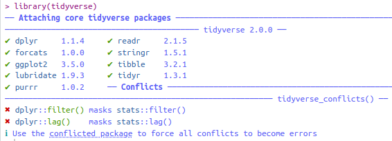

4 Introduction to the tidyverse
For this chapter you will need the following packages and data frames:
## ── Attaching core tidyverse packages ──────────────────
## ✔ dplyr 1.1.4 ✔ readr 2.1.5
## ✔ forcats 1.0.0 ✔ stringr 1.5.1
## ✔ ggplot2 3.5.0 ✔ tibble 3.2.1
## ✔ lubridate 1.9.3 ✔ tidyr 1.3.1
## ✔ purrr 1.0.2
## ── Conflicts ───────────────── tidyverse_conflicts() ──
## ✖ dplyr::filter() masks stats::filter()
## ✖ dplyr::lag() masks stats::lag()
## ℹ Use the conflicted package (<http://conflicted.r-lib.org/>) to force all conflicts to become errors##
## Attaching package: 'magrittr'
##
## The following object is masked from 'package:purrr':
##
## set_names
##
## The following object is masked from 'package:tidyr':
##
## extracturl <- "http://www.phonetik.uni-muenchen.de/~jmh/lehre/Rdf"
asp <- read.table(file.path(url, "asp.txt"))
int <- read.table(file.path(url, "intdauer.txt"))
vdata <- read.table(file.path(url, "vdata.txt"))Please use the methods from chapter @ref{characteristics} to familiarise yourself with the three data frames!
The tidyverse is a collection of packages that help with the diverse aspects of data processing. We will work with a subset of these packages in this and the following chapters. When you load the tidyverse you’ll see the following output:

The tidyverse, version 2.0, consists of the listed nine packages (dplyr, forcats, ggplot2, lubridate, purrr, readr, stringr, tibble, tidyr). Each of them can also be loaded separately. Additionally, the output above shows two conflicts. The notation dplyr::filter() translates to “the function filter() from the package dplyr”. This function overwrites the function filter() from the package stats (which is one of the packages that is available upon starting RStudio, i.e. without having to load it using library()). Functions from distinct packages can overwrite each other when they have the same function name, e.g. filter(). If you were to use filter() in your code now, you would be using the function from dplyr and not the one from stats. If you explicitly want to use the function from stats, just use the notation shown above, i.e. stats::filter().
Many functions of the tidyverse replace traditional R notations which are often less easy to read and write than tidyverse code. We will use the tidyverse to clean up data frames, filter or manipulate them.
4.1 Pipes
First, we have to learn the tidyverse syntax:
## d Wort Vpn Kons Bet
## 1 26.18 Fruehlingswetter k01 t un
## 2 23.06 Gestern k01 t un
## 3 26.81 Montag k01 t un
## 4 14.75 Vater k01 t un
## 5 42.38 Tisch k01 t be
## 6 21.56 Mutter k01 t unWe begin each snippet of code with the data frame and then just add the functions that we want to apply to the data frame in chronological order. Between each function you put the pipe symbol %>% the pipe always takes the object on its left-hand side and submits it to the function on its right-hand side. So in this code snippet above, the function head() is applied to the data frame asp. This has exactly the same effect as:
## d Wort Vpn Kons Bet
## 1 26.18 Fruehlingswetter k01 t un
## 2 23.06 Gestern k01 t un
## 3 26.81 Montag k01 t un
## 4 14.75 Vater k01 t un
## 5 42.38 Tisch k01 t be
## 6 21.56 Mutter k01 t unUsing the simple pipe in a snippet of tidyverse code, the data frame is not changed. The result of the code is simply printed in the console. If, however, you want to save the result of a tidyverse pipe in a variable you can use the usual notation with the arrow <-:
## [1] 2892The special thing is that you can attach as many functions to a pipe as you want. The functions will then always be applied to the result from the previous function, as we will see soon. Within a function you can access the columns of the data frame by means of their name, without using any special symbols or notations.
4.2 Manipulating Data with dplyr
The most important functions which you will need in your day-to-day usage of R are part of the package dplyr. We differentiate here between different kinds of operations that you can apply to data frames using dplyr functions.
4.2.1 Filtering
A common task is filtering or selecting certain rows and/or columns. You can choose certain rows by means of the function filter(). The argument(s) of that function is/are one or more logical expressions using the logical operators from chapter 2.4. If you want to select all rows of the data frame asp for which the string “Montag” is in the column Wort, you can use the operator ==:
## d Wort Vpn Kons Bet
## 3 26.81 Montag k01 t un
## 63 17.75 Montag k01 t un
## 123 45.12 Montag k02 t un
## 182 40.50 Montag k03 t un
## 241 33.00 Montag k04 t un
## 300 32.69 Montag k04 t un
## 359 50.82 Montag k05 t un
## 476 27.93 Montag k06 t un
## 537 17.25 Montag k61 t un
## 597 21.13 Montag k62 t un
## 656 20.75 Montag k62 t un
## 2078 105.94 Montag k70 t un
## 2079 17.56 Montag k70 t un
## 2080 22.25 Montag k70 t un
## 2155 60.25 Montag K19 t un
## 2156 14.87 Montag K20 t un
## 2157 17.56 Montag K20 t un
## 2231 47.31 Montag K74 t un
## 2232 34.94 Montag K74 t un
## 2233 35.44 Montag K74 t un
## 2310 22.62 Montag k61 t un
## 2311 16.43 Montag k61 t un
## 2312 29.31 Montag k61 t un
## 2391 50.31 Montag k61 t un
## 2392 33.12 Montag k61 t un
## 2393 39.68 Montag k61 t un
## 2403 42.88 Montag k61 t un
## 2424 35.44 Montag k62 t un
## 2506 11.25 Montag k62 t un
## 2528 8.06 Montag k62 t un
## 2604 33.94 Montag dlm t un
## 2624 29.87 Montag dlm t un
## 2704 30.32 Montag dlm t un
## 2725 21.93 Montag dlm t un
## 2800 49.12 Montag hpt t un
## 2821 24.87 Montag hpt t unAll rows for which the duration d is lower than 10 ms is given by the following expression:
## d Wort Vpn Kons Bet
## 180 9.130 Fruehlingswetter k03 t un
## 205 8.440 verstauchter k03 t un
## 540 6.688 Mutter k61 t un
## 773 8.000 Butter k64 t un
## 895 7.060 Buttergeschichte k66 t un
## 982 9.500 Butter k66 t un
## 999 8.300 Butter K22 t un
## 1142 9.750 Vater K30 t un
## 1155 8.630 Schwester K61 t un
## 1170 5.690 maechtig K62 t un
## 1294 9.690 Butter k07 t un
## 1362 8.870 Freitag k08 t un
## 1548 6.500 Vater k10 t un
## 1564 8.750 spaeter k11 t un
## 1565 5.250 Sonntags k11 t un
## 2507 6.570 unterbrechen k62 t un
## 2528 8.060 Montag k62 t un
## 2542 9.500 Samstag k62 t un
## 2580 8.880 samstags k62 t unOf course you can connect several logical expressions using the logical operators for “and” & or for “or” |. The following expression, for instance, only returns rows for which the participant Vpn is either “k01” or “k02” or “k03” and the consonant Kons is not “t”:
## d Wort Vpn Kons Bet
## 7 50.00 konnte k01 k un
## 8 78.12 Kaffee k01 k be
## 11 64.13 Broetchenkorb k01 k be
## 12 48.94 keinen k01 k be
## 13 59.00 Kuchen k01 k be
## 16 56.00 einkaufen k01 k be
## 19 34.37 Zucker k01 k un
## 20 55.75 Suessigkeiten k01 k un
## 21 55.62 kaufen k01 k be
## 22 55.94 Konserven k01 k un
## 23 61.81 Kasse k01 k be
## 28 47.25 Kartoffeln k01 k un
## 31 37.62 Kaffee k01 k be
## 33 54.19 Koennen k01 k un
## 35 35.49 Dickicht k01 k un
## 40 59.44 Kuechenofen k01 k be
## 42 64.50 kocht k01 k be
## 48 69.19 Karten k01 k be
## 49 58.69 Fahrkarten k01 k be
## 53 30.82 Acker k01 k un
## 57 95.13 kurz k01 k be
## 58 57.38 verkuendet k01 k be
## 59 72.00 kommen k01 k be
## 67 37.75 konnte k01 k un
## 68 52.69 Kaffee k01 k be
## 71 71.43 Broetchenkorb k01 k be
## 72 51.75 keinen k02 k be
## 73 70.82 Kuchen k02 k be
## 76 68.19 einkaufen k02 k be
## 79 17.38 Zucker k02 k un
## 80 50.25 Suessigkeiten k02 k un
## 81 43.07 kaufen k02 k be
## 82 35.62 Konserven k02 k un
## 83 59.25 Kasse k02 k be
## 88 44.94 Kartoffeln k02 k un
## 91 34.44 Kaffee k02 k be
## 93 35.62 Koennen k02 k un
## 95 30.69 Dickicht k02 k un
## 100 72.32 Kuechenofen k02 k be
## 102 33.75 kocht k02 k be
## 108 61.06 Karten k02 k be
## 109 50.82 Fahrkarten k02 k be
## 113 23.93 Acker k02 k un
## 117 67.87 kurz k02 k be
## 118 35.62 verkuendet k02 k be
## 119 44.56 kommen k02 k be
## 127 39.87 konnte k02 k un
## 128 46.00 Kaffee k02 k be
## 131 67.57 Broetchenkorb k02 k be
## 132 58.25 keinen k02 k be
## 133 58.81 Kuchen k02 k be
## 136 54.94 einkaufen k02 k be
## 139 30.88 Zucker k02 k un
## 140 49.18 Suessigkeiten k02 k un
## 141 63.44 kaufen k02 k be
## 142 45.25 Konserven k02 k un
## 143 50.50 Kasse k02 k be
## 148 54.31 Kartoffeln k03 k un
## 151 53.25 Kaffee k03 k be
## 153 34.00 Koennen k03 k un
## 155 47.82 Dickicht k03 k un
## 160 50.56 Kuechenofen k03 k be
## 162 38.38 kocht k03 k be
## 168 62.43 Karten k03 k be
## 169 36.94 Fahrkarten k03 k be
## 172 46.69 Acker k03 k un
## 176 43.38 kurz k03 k be
## 177 54.75 verkuendet k03 k be
## 178 53.75 kommen k03 k be
## 186 32.56 konnte k03 k un
## 187 41.81 Kaffee k03 k be
## 190 56.81 Broetchenkorb k03 k be
## 191 52.93 keinen k03 k be
## 192 59.88 Kuchen k03 k be
## 195 46.13 einkaufen k03 k be
## 198 29.51 Zucker k03 k un
## 199 43.13 Suessigkeiten k03 k un
## 200 36.75 kaufen k03 k be
## 201 33.82 Konserven k03 k un
## 202 60.69 Kasse k03 k be
## 206 32.25 Kartoffeln k03 k un
## 209 48.00 Kaffee k03 k be
## 211 33.19 Koennen k03 k un
## 213 56.81 Dickicht k03 k un
## 218 65.37 Kuechenofen k03 k be
## 220 40.81 kocht k03 k beThe rows in a data frame are usually numbered, i.e. all rows have an index. If you want to select rows by their index, use slice() or the related functions slice_head(), slice_tail(), slice_min() and slice_max(). The function slice() takes the index of the rows to be selected as its only argument:
## d Wort Vpn Kons Bet
## 4 14.75 Vater k01 t un## d Wort Vpn Kons Bet
## 1 26.18 Fruehlingswetter k01 t un
## 2 23.06 Gestern k01 t un
## 3 26.81 Montag k01 t un
## 4 14.75 Vater k01 t un
## 5 42.38 Tisch k01 t be
## 6 21.56 Mutter k01 t un
## 7 50.00 konnte k01 k un
## 8 78.12 Kaffee k01 k be
## 9 53.63 Tassen k01 t be
## 10 45.94 Teller k01 t beThe functions slice_head() and slice_tail() have an argument n which is the amount of rows starting with the first or last, respectively, that are to be selected.
## d Wort Vpn Kons Bet
## 1 26.18 Fruehlingswetter k01 t un
## 2 23.06 Gestern k01 t un## d Wort Vpn Kons Bet
## 2890 24.94 vormittags kko t un
## 2891 21.93 Richtung kko t un
## 2892 51.94 Verkehrt kko k beThe functions slice_min() and slice_max() return the n rows that have the lowest, respectively highest, values in a given column. If n is not provided by the user, the function automatically uses n = 1, i.e. only one row is returned.
Further Information: Defaults for arguments
If you do not specify certain arguments in functions, often the default values will be used. For an example, look at the help page of the function seq(). This tells you the following information about this function and its arguments:

The arguments from and to have the default value 1. And since these are the only obligatory arguments in that case, you can actually execute the function without giving it any arguments explicitly:
## [1] 1The argument by also has a default value that is calculated from the values of to, from and length.out unless the user supplies the argument.
Often you can find the defaults for arguments on the help pages under Usage, sometimes they are only provided in the description of the arguments below that.
Here are two examples for the two functions which refer to the duration in column d of the data frame asp.
## d Wort Vpn Kons Bet
## 1565 5.25 Sonntags k11 t un## d Wort Vpn Kons Bet
## 1565 5.250 Sonntags k11 t un
## 1170 5.690 maechtig K62 t un
## 1548 6.500 Vater k10 t un
## 2507 6.570 unterbrechen k62 t un
## 540 6.688 Mutter k61 t un## d Wort Vpn Kons Bet
## 2063 138.8 Kiel k70 k be## d Wort Vpn Kons Bet
## 2063 138.8 Kiel k70 k be
## 2843 129.7 Kiel hpt k be
## 1006 116.5 Ladentuer K23 t be
## 2070 111.6 Tagen k70 t be
## 1456 111.4 kauen k09 k beThese two functions can even be applied to columns that contain strings. In this case the selection is done alphabetically.
## d Wort Vpn Kons Bet
## 51 47.63 Abteil k01 t be
## 111 56.25 Abteil k02 t be
## 171 56.81 Abteil k03 t be
## 229 31.63 Abteil k04 t be
## 288 67.31 Abteil k04 t be
## 347 76.25 Abteil k05 t be
## 406 38.07 Abteil k05 t be
## 463 52.62 Abteil k06 t be
## 524 46.93 Abteil k61 t be
## 585 35.18 Abteil k61 t be
## 644 47.00 Abteil k62 t be
## 703 79.37 Abteil k63 t be## d Wort Vpn Kons Bet
## 2444 80.75 zurueckkommen k62 k be
## 2546 73.44 zurueckkommen k62 k be
## 2641 53.30 zurueckkommen dlm k be
## 2743 63.12 zurueckkommen dlm k be
## 2838 79.63 zurueckkommen hpt k beSince there are several rows for which the column Wort has the lowest (“abkaufen”) respectively highest value (“Zwischenstop”), all of these rows are returned despite n = 1.
4.2.2 Selecting
The function for selecting columns is called select() which can be used in several ways. The only arguments to the function are the names of the columns to be selected. In the following examples you’ll also see for the first time how to concatenate several functions, because we’ll limit the output of the select() function by adding slice(1) for pure visual reasons.
## Vpn
## 1 k01## Vpn Bet
## 1 k01 un## d Wort Vpn Kons
## 1 26.18 Fruehlingswetter k01 t## Bet
## 1 un## d Vpn Kons Bet
## 1 26.18 k01 t unWithin the function select() it can be helpful to use the functions starts_with() and ends_with(), if you want to select all columns whose name starts or ends with the same letter(s). We’ll demonstrate this using the data frame vdata which has the following columns:
## [1] "X" "Y" "F1" "F2" "dur" "V"
## [7] "Tense" "Cons" "Rate" "Subj"starts_with() allows us to select F1 and F2 because both start with “F”:
## F1 F2
## 1 313 966Similarly to what you have learnt about filtering, you can connect the functions starts_with() and ends_with() using the logical operators & and |. Here we select the column “F1” (admittedly in a pretty laborious way):
## F1
## 1 313Sometimes we do not want our tidyverse pipes to return a column in the form of a data frame, but as a simple vector. This can be done with pull(). In the following pipe, we first choose the first ten rows of asp and then want to return the column Bet as a vector:
## [1] "un" "un" "un" "un" "be" "un" "un" "be" "be" "be"In the output you see that Bet was indeed returned as a vector.
4.2.3 Mutating
Mutating here means to add or change columns in data frames. The command to do that is called mutate() and takes as arguments the new columns and the values to fill the columns. When you want to add several new columns you can do so in the same mutate() command. The following code, for instance, adds two new columns called F1 and F2 to the data frame int:
## Vpn dB Dauer
## 1 S1 24.50 162
## 2 S2 32.54 120
## 3 S2 38.02 223
## 4 S2 28.38 131
## 5 S1 23.47 67
## 6 S2 37.82 169int %>% mutate(F1 = c(282, 277, 228, 270, 313, 293, 289, 380, 293, 307, 238, 359, 300, 318, 231),
F2 = c(470, 516, 496, 530, 566, 465, 495, 577, 501, 579, 562, 542, 604, 491, 577))## Vpn dB Dauer F1 F2
## 1 S1 24.50 162 282 470
## 2 S2 32.54 120 277 516
## 3 S2 38.02 223 228 496
## 4 S2 28.38 131 270 530
## 5 S1 23.47 67 313 566
## 6 S2 37.82 169 293 465
## 7 S2 30.08 81 289 495
## 8 S1 24.50 192 380 577
## 9 S1 21.37 116 293 501
## 10 S2 25.60 55 307 579
## 11 S1 40.20 252 238 562
## 12 S1 44.27 232 359 542
## 13 S1 26.60 144 300 604
## 14 S1 20.88 103 318 491
## 15 S2 26.05 212 231 577These new columns are not automatically saved in the data frame! There are two ways to attach new columns to a data frame permanently. The first is as usually with the arrow <-. Let’s create a new variable int_new that contains the data frame int including the two new columns (we also could have overwritten the original data frame int with the mutated data frame by calling the variable int).
int_new <- int %>%
mutate(F1 = c(282, 277, 228, 270, 313, 293, 289, 380, 293, 307, 238, 359, 300, 318, 231),
F2 = c(470, 516, 496, 530, 566, 465, 495, 577, 501, 579, 562, 542, 604, 491, 577))
int_new %>% head()## Vpn dB Dauer F1 F2
## 1 S1 24.50 162 282 470
## 2 S2 32.54 120 277 516
## 3 S2 38.02 223 228 496
## 4 S2 28.38 131 270 530
## 5 S1 23.47 67 313 566
## 6 S2 37.82 169 293 465The second way is the so-called double pipe from the package magrittr: %<>%. The double pipe can only be the first pipe in a line of pipes (as we shall see soon). Furthermore you only need to put the data frame to be overwritten to the left of the double pipe, not again on the right.
int %<>% mutate(F1 = c(282, 277, 228, 270, 313, 293, 289, 380, 293, 307, 238, 359, 300, 318, 231),
F2 = c(470, 516, 496, 530, 566, 465, 495, 577, 501, 579, 562, 542, 604, 491, 577))
int %>% head()## Vpn dB Dauer F1 F2
## 1 S1 24.50 162 282 470
## 2 S2 32.54 120 277 516
## 3 S2 38.02 223 228 496
## 4 S2 28.38 131 270 530
## 5 S1 23.47 67 313 566
## 6 S2 37.82 169 293 465There are two functions that are very useful within mutate() if the values of a new column are dependent on those of existing columns. For binary decisions you can use ifelse(), otherwise case_when().
Let’s assume you want to attach another column to the data frame int. You know that participant “S1” is 29 years old, whereas participant “S2” is 33 years old. You want to add a column age with that information. In that case, you should use ifelse() within mutate(). ifelse() takes as arguments a logical expression, then the value for rows for which that expression evaluates to TRUE, and lastly the value for rows for which the expression is FALSE. When you execute this command, it is tested for every row whether the participant is “S1”, if so, it puts the value 29 in the new column age, otherwise it puts the value 33.
## Vpn dB Dauer F1 F2 age
## 1 S1 24.50 162 282 470 29
## 2 S2 32.54 120 277 516 33
## 3 S2 38.02 223 228 496 33
## 4 S2 28.38 131 270 530 33
## 5 S1 23.47 67 313 566 29
## 6 S2 37.82 169 293 465 33
## 7 S2 30.08 81 289 495 33
## 8 S1 24.50 192 380 577 29
## 9 S1 21.37 116 293 501 29
## 10 S2 25.60 55 307 579 33
## 11 S1 40.20 252 238 562 29
## 12 S1 44.27 232 359 542 29
## 13 S1 26.60 144 300 604 29
## 14 S1 20.88 103 318 491 29
## 15 S2 26.05 212 231 577 33When this kind of decision is non-binary, you can use the function case_when(). This function takes as many logical expressions and corresponding values as desired. We’ll add another new column to the data frame int which will be called noise. When the column dB has a value of below 25 decibels, the column noise should have the value “quiet”, for noise levels between 25 and 35 it should say “mid”, and for values above 35 decibels it should say “loud”. The notation of these conditions is as follows: First the logical expression, then a tilde ~, and finally the value to be written into the new column if the logical expression is TRUE.
## Vpn dB Dauer F1 F2 noise
## 1 S1 24.50 162 282 470 quiet
## 2 S2 32.54 120 277 516 mid
## 3 S2 38.02 223 228 496 loud
## 4 S2 28.38 131 270 530 mid
## 5 S1 23.47 67 313 566 quiet
## 6 S2 37.82 169 293 465 loud
## 7 S2 30.08 81 289 495 mid
## 8 S1 24.50 192 380 577 quiet
## 9 S1 21.37 116 293 501 quiet
## 10 S2 25.60 55 307 579 mid
## 11 S1 40.20 252 238 562 loud
## 12 S1 44.27 232 359 542 loud
## 13 S1 26.60 144 300 604 mid
## 14 S1 20.88 103 318 491 quiet
## 15 S2 26.05 212 231 577 mid4.2.4 Renaming
Columns should always be given reasonable names, i.e. names that tell you exactly and concisely what the content of the column is – this is not a trivial demand!).
In the data frame asp almost all column names are abbreviations:
## [1] "d" "Wort" "Vpn" "Kons" "Bet"Using the function rename() we’ll rename all the columns and save the result directly in asp using the double pipe. The arguments of that function are the desired column name, then =, and then the old column name. You do not need to put the column names in quotes. You can also rename several columns at once.
## [1] "duration" "Wort" "subject" "consonant"
## [5] "stress"4.3 More Examples of Complex Pipes
As you have seen already, you can concatenate multiple functions using pipes. While doing that, it is very important to consider that each function is applied to the result of the previous function. If you write long pipes (i.e. several functions connected via %>%), you should always add a line break right after the %>% for reasons of legibility.
The following two pipes have the same result and do not throw any error, but they progress differently. In the first example, the column subject is selected before the first row is returned, in the second example the steps are reversed.
## subject
## 1 k01## subject
## 1 k01Such pipes can occasionally lead to errors if you do not decide carefully which functions to execute first. For instance, let’s say you want to select the column X from the data frame vdata but you also want to rename it to age. The following code is going to throw an error because the function select() can not be applied to a column X after that column has been renamed to age:
## Error in `select()`:
## ! Can't subset columns that don't exist.
## ✖ Column `X` doesn't exist.This error also tells you exactly what went wrong. The correct order of functions is this (we also use slice(1:10) to reduce the visible output):
## age
## 1 52.99
## 2 53.61
## 3 55.14
## 4 53.06
## 5 52.74
## 6 53.30
## 7 54.37
## 8 51.20
## 9 54.65
## 10 58.42Another example: you want to be given the duration values (Dauer) in int for F1 values below 270 Hz.
## Error in UseMethod("filter"): no applicable method for 'filter' applied to an object of class "c('integer', 'numeric')"This error is much more cryptic. Let’s reconstruct what went wrong. We pulled the column Dauer from the data frame int, and that column does exist. However, we used pull() for that operation, which returns the column as a vector, and not as a data frame. You can test this as follows:
## [1] 162 120 223 131 67 169 81 192 116 55 252 232
## [13] 144 103 212## [1] "integer"Yes, this is a vector of integers. In the code above, we then tried to apply a function to that vector that is meant to be applied to data frames only – that’s why the pipe threw an error. The solution in this case is to filter first, and then pull the duration values:
## [1] 223 252 212These are the duration values for the three rows for which F1 is lower than 270 Hz.
Finally, we want to show an example of a complex pipe using the double pipe at the beginning. So what we do here will overwrite the data frame, and not just print the result in the console. We want to add the column noise to the data frame int permanently now, then select all rows for which the subject is “S1” and the duration is between 100 and 200 ms, and lastly we want to select the columns noise and Dauer as well as the first five rows.
int %<>%
mutate(noise = case_when(dB < 25 ~ "quiet",
dB > 25 & dB < 35 ~ "mid",
dB > 35 ~ "loud")) %>%
filter(Vpn == "S1" & Dauer > 100 & Dauer < 200) %>%
select(Dauer, noise) %>%
slice_head(n = 5)
int## Dauer noise
## 1 162 quiet
## 8 192 quiet
## 9 116 quiet
## 13 144 mid
## 14 103 quietThe data frame int now only consists of two columns and five rows and this operation can not be undone. So please be careful and think about whether or not you want to overwrite a data frame with the result of a pipe.